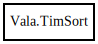

TimSort
Object Hierarchy:

Description:
internal class TimSort<G>
A stable, adaptive, iterative mergesort that requires far fewer than n*lg(n) comparisons when running on partially sorted arrays, while
offering performance comparable to a traditional mergesort when run on random arrays. Like all proper mergesorts, this sort is stable and
runs O(n*log(n)) time (worst case). In the worst case, this sort requires temporary storage space for n/2 object references; in the best
case, it requires only a small constant amount of space.
This implementation was adapted from Tim Peters's list sort for Python, which is described in detail here:
http://svn.python.org/projects/python/trunk/Objects/listsort.txt
Tim's C code may be found here:
http://svn.python.org/projects/python/trunk/Objects/listobject.c
The underlying techniques are described in this paper (and may have even earlier origins):
- "Optimistic Sorting and Information Theoretic Complexity"
Peter McIlroy
SODA (Fourth Annual ACM-SIAM Symposium on Discrete Algorithms), pp
467-474, Austin, Texas, 25-27 January 1993.
Content:
Classes:
Constants:
Delegates:
- private delegate bool LowerFunc (G left, G right)
Static methods:
- public static void sort<G> (List<G> list, CompareDataFunc<G> compare)
- private static void sort_list<G> (List<G> list, CompareDataFunc<G> compare)
- private static void sort_arraylist<G> (ArrayList<G> list, CompareDataFunc<G> compare)
Creation methods:
Methods:
- private void do_sort ()
- private inline bool lower_than (G left, G right)
- private inline bool lower_than_or_equal_to (G left, G right)
- private int compute_minimum_run_length (int length)
- private Slice<G> compute_longest_run (Slice<G> a, out bool descending)
- private void insertion_sort (Slice<G> a, int offset)
- private void merge_collapse ()
- private void merge_force_collapse ()
- private void merge_at (int index)
- private int gallop_leftmost (G key, Slice<G> a, int hint)
- private int gallop_rightmost (G key, Slice<G> a, int hint)
- private void merge_low (owned Slice<G> a, owned Slice<G> b)
- private void merge_high (owned Slice<G> a, owned Slice<G> b)
Fields: